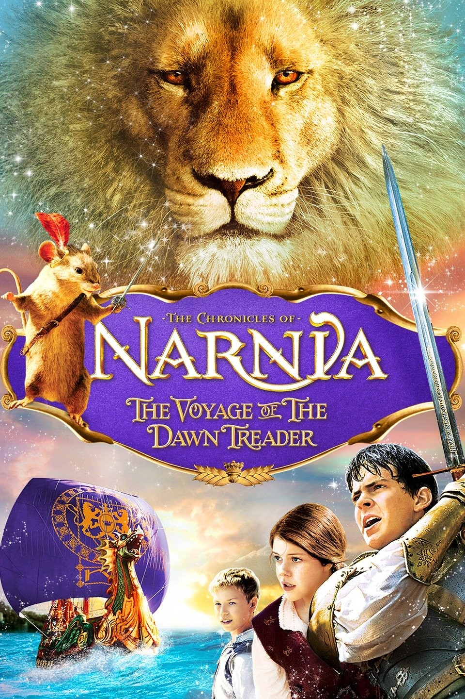

The Voyage of the Dawn Treader

Edmund dan Lucy Pevensie, dikirim ke rumah saudara sepupu mereka yang nakal, Eustace Clarence Scrubb, untuk berlibur. Namun, tanpa disangka-sangka, mereka ditarik ke dalam dunia Narnia, melalui gambar sebuah kapal di tembok kamar menjadi hidup. Mereka bertiga jatuh ke lautan dan ditolong oleh awak-awak dari sebuah kapal yang bernama Dawn Treader.
Ketika mereka sudah ditolong, mereka disambut oleh Raja Caspian X, sahabat Edmund dan Lucy dalam petualangan mereka sebelumnya (diceritakan di buku “Pangeran Caspian”).
Rupanya dalam tahun ketiga pemerintahannya, raja Caspian melakukan perjalanan dengan menggunakan kapal Dawn Treader untuk mencari tujuh orang Lord yang hilang. Para Lord itu adalah sahabat-sahabat ayah Caspian yang disingkirkan Raja Miraz, raja sebelum Caspian.
Lucy dan Edmund sangat berbahagia karena bisa kembali ke Narnia, tetapi tidak demikian dengan Eustace yang tidak bersemangat dan bersikap menyebalkan. Raja Caspian didampingi oleh kaptennya, Lord Drinian, perwira kedua Rhince, awak-awak kapal di mana salah satunya bernama Rynelf dan sang tikus gagah berani, Reepicheep, dalam perjalanan untuk mencapai lautan timur.
Sebelum menyelamatkan Lucy, Edmund dan Eustace, perjalanan Dawn Treader sudah melewati Galma, Terebinthia dan Seven Isles.
Pertama-tama mereka sampai di Lone Islands, yang masih termasuk wilayah kerajaan Narnia. Sangat disayangkan penduduk pulau tersebut sudah berubah jahat, karena mereka terlibat dalam penjual-belian budak.
Caspian, Edmund, Lucy, Eustace dan Reepicheep diculik dan untuk dijual di pasar budak. Seorang pria membeli Caspian sebelum mereka sampai di pasar itu. Ternyata pria itu adalah Lord Bern, salah seorang Lord yang hilang itu. Lord Bern mengakui Caspian sebagai rajanya ketika Caspian memberitahukan identitasnya yang sebenarnya.
Raja Caspian dibantu Lord Bern berhasil mengambil alih kembali kekuasaan di pulau itu dari Gubernur Gumpas yang tamak. Ia mengangkat Lord Bern sebagai penguasa baru disana dan memberinya gelar Duke Lone Islands.
Setelah menguasai keadaan di istana gubernur, maka raja Caspianpergi ke pasar budak dan berhasil melepaskan teman-temannya.
Di pulau kedua yang mereka kunjungi, Eustace meninggalkan kelompoknya untuk menghindari tugas. Dalam pelariannya dari tugas, ia sampai di lembah yang tidak dikenalinya dan menemukan sebuah gua.
Dari dalam gua itu, seekor naga muncul dan mati tidak lama kemudian. Tiba-tiba turun hujan dan Eustace harus berlindung di dalam gua itu yang ternyata berisi harta karun. Dia menjadi tamak dan memenuhi kantungnya dengan emas dan perhiasan. Ia juga mengambil sebuah gelang dan memakaikannya di atas siku. Eustace lalu tertidur di gua itu.
Ketika ia bangun, ia telah berubah menjadi seekor naga, dan gelang yang dipakainya sangat menyakiti lengannya yang telah menjadi besar.
Ketika teman seperjalanannya melihat Eustace, pertama-tama mereka tidak mengenalinya. Namun dengan bahasa isyarat akhirnya mereka mengetahui bahwa Eustace-lah naga itu.
Raja Caspian mengenali gelang yang dipakai Eustace sebagai milik Lord Octesian. Mereka beranggapan Lord Octesian tidak pernah pergi hidup-hidup dari pulau itu. Dalam bentuk seekor naga, Eustace menjadi sadar atas kelakuan nakalnya yang sebelumnya.
Ia berubah menjadi lebih baik dengan membantu kelompoknya dengan kemampuannya sebagai seekor naga. Suatu malam tiba-tiba Aslan muncul untuk mengunjungi Eustace. Aslan merubahnya kembali menjadi seorang anak laki-laki. Sebagai hasil pertemuannya dengan Aslan, Eustace kini menjadi anak yang jauh lebih baik. Setelah Dawn Treader diperbaiki, mereka meninggalkan Dragon Island, demikian mereka menamakan pulau itu, dan melanjutkan perjalanan mereka.
Setelah itu mereka sampai di Burnt Island dan terus sampai di Deathwater Island (dinamakan demikian atas usul dari Reepicheep karena disana ada sebuah kolam yang membuat sesuatu yang masuk ke dalamnya menjadi emas, demikian juga dengan Lord Restimar, salah seorang Lord yang dicari, masuk ke dalamnya karena ingin mandi).
Setelah dari pulau itu, mereka singgah di The Duffers Island. Pulau itu dihuni oleh kaum Dufflepud yang dipimpin oleh Coriakin, seorang penyihir yang baik dan bintang yang sedang menjalankan hukuman.
Dalam perjalanan mereka, mereka juga melewati Pulau Kegelapan. Di pulau terakhir ini, mereka menemukan masalah besar, karena di pulau itu semua mimpi terburuk menjadi kenyataan.
Disana mereka menemukan Lord Rhoop yang hidup dalam ketakutan karena telah tinggal di pulau itu cukup lama. Namun akhirnya mereka berhasil lolos dari pulau itu dengan panduan Aslan dalam bentuk seekor burung.
Akhirnya mereka sampai di Pulau Ramandu, di mana mereka menemukan Lord Revilian, Lord Argoz dan Lord Mavramorn yang sedang tertidur karena sihir. Di pulau itu mereka bertemu dengan Ramandu seorang bintang tua yang beristirahat dan putrinya.
Ramandu menjelaskan cara untuk membangunkan ketiga Lord tersebut adalah dengan berlayar ke Ujung Akhir Dunia dan meninggalkan salah satu awak kapal disana.
Kapal Dawn Treader meneruskan perjalanan ke daerah di mana kaum Manusia Laut tinggal. Disana air terasa manis, bukan asin seperti biasanya. Akhirnya kapal tidak bisa meneruskan perjalanan lebih jauh karena air menjadi terlalu dangkal.
Raja Caspian memerintahkan untuk menurunkan perahu dan mengumumkan bahwa ia akan menuju Ujung Akhir Dunia bersama dengan Reepicheep. Para awak dan sahabat-sahabatnya tidak setuju dengan rencana itu, dengan alasan seorang raja tidak boleh meninggalkan rakyatnya. Raja Caspian memasuki kabinnya sambil marah-marah.
Namun tidak lama kemudian, mereka menemukan sang Raja dengan muka yang pucat dan mata yang
berkaca-kaca. Ternyata, Aslan sudah menegurnya dan mengatakan hanya Reepicheep, Edmund, Lucy dan Eustace yang boleh melanjutkan perjalanan. Yang lain harus kembali ke Narnia.
Lucy, Edmund, Eustace dan Reepicheep melanjutkan perjalanan dengan perahu melalui lautan bunga yang seperti karpet sampai ke daerah yang sudah terlalu dangkal bagi sebuah perahu. Reepicheep melanjutkan perjalanan dengan sebuah perahu kulit kecil yang hanya bisa dipakai Reepicheep, dan Reepicheep sudah tidak akan pernah ditemui lagi di Narnia.
Lucy, Edmund dan Eustace lalu berjalan di tempat dangkal dan menemukan seekor Domba yang menawarkan sarapan ikan bakar.
Domba itu kemudian berubah menjadi Aslan yang memberitahu bahwa Lucy dan Edmund tidak akan kembali lagi ke Narnia. Mereka diminta untuk belajar tentang Aslan yang mempunyai nama lain di dunia mereka. Di bagian akhir diceritakan tentang Eustace yang sudah berubah menjadi anak baik, dan raja Caspian yang akhirnya menikahi putri Ramandu.